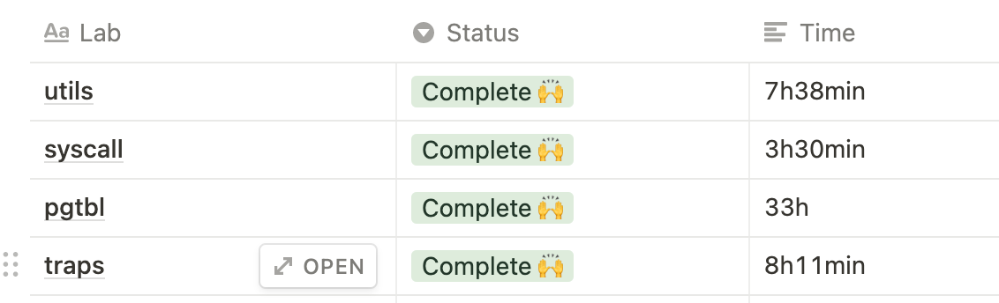

Xv6 traps lab
异常介绍
异常一部分由硬件实现，一部分由操作系统实现。因此具体的实现会根据硬件架构而不同。
异常可以分为三种:
| 类别 | 原因 | 返回行为 |
|---|---|---|
| 中断(Interrupt) | 来自IO设备的信号 | 总是返回到下一条指令 |
| 陷阱(Trap) | 有意的异常 | 总是返回到下一条指令 |
| 故障(Fault) | 潜在可恢复的错误 | 可能返回到当前指令 |
Backtrace
Backtrace是一个在调试的时候可能会用到的技术，它需要操作系统提供支持。 Backtrace的效果如下
backtrace:
0x0000000080002cda
0x0000000080002bb6
0x0000000080002898
它将递归打印函数的调用链中函数的地址。
在这个任务中，我们需要在kernel中实现Backtrace。
这个任务需要实现的都在提示里面了，因此很简单，但是里面涉及到了一些重要的知识点：

上图展示了一个程序的栈帧结构。sp指向的是当前栈，fp指向的是当前帧。在一个函数被调用时，它会在栈上c从上往下开辟一块新的栈帧，随着变量的分配，栈不断向下增长，而帧保持不变。为了让函数返回到被调用函数中继续执行，当前函数的栈帧会保存着调用者的返回地址与帧对应的地址（调用者的栈即是被调用者的帧，不用额外保存)。
如图所示，返回地址在(fp - 8)处，调用者的帧在(fp - 16)处。通过这个信息，我们可以不断向上回溯栈帧，从而拿到每个函数的返回地址，将调用链展示出来。
我用来实现Backtrace的代码如下:
static inline uint64
r_fp()
{
uint64 x;
asm volatile("mv %0, s0" : "=r" (x) );
return x;
}
void
backtrace()
{
uint64 fp, ra;
printf("backtrace:\n");
fp = r_fp();
while(PGROUNDDOWN(fp) >= KERNBASE){
ra = *(uint64 *)(fp - 0x8);
if(PGROUNDDOWN(ra) < KERNBASE)
break;
printf("%p\n", ra);
fp = *(uint64 *)(fp - 0x10);
}
}
r_fp能够从s0寄存器中读出当前帧的地址，这是因为RISC-V要求编译器将帧的地址保存于此。
Alarm
这个任务需要实现sigalarm信号。用户程序首先会通过
sigalarm(interval, handler)
注册sigalarm的时间片长度与处理函数。这里的处理函数由用户编写，在interval时间片用完之后，内核会执行handler，然后再继续执行用户程序。我们在这个任务中关键的步骤是在内核态返回到用户态的时候跳转的handler中，与在出现trap的时候保存当前的上下文，从而在执行完handler函数后能够继续执行用户程序。
我的实现如下:
uint64 sys_sigalarm(void)
{
int ticks;
void (*fn)();
if(argint(0, &ticks) < 0)
return -1;
if(argaddr(1, (void *)&fn) < 0)
return -1;
myproc()->sigalarm_total_ticks = ticks;
myproc()->sigalarm_fn = fn;
return 0;
}
首先在sigalarm系统调用中，将interval和handler都保存在进程的结构体中。
if(which_dev == 2){
p->sigalarm_passed_ticks += 1;
if(p->in_sig_handler == 0 && p->sigalarm_passed_ticks == p->sigalarm_total_ticks) {
p->sigalarm_passed_ticks = 0;
for(int i = 0; i < sizeof(struct sigreturn_context) / sizeof(uint64); ++i) {
*(((uint64 *) &(p->sigreturn_context)) + i) = *(((uint64 *) p->trapframe) + i);
}
p->trapframe->epc = (uint64)p->sigalarm_fn;
p->in_sig_handler = 1;
}
}
在Xv6处理用户态异常的代码中加上上面的代码，which_dev == 2意味着时钟中断。每次时钟中断到来的时候，都将sigalarm_passed_ticks加1，如果它等于了sigalarm_total_ticks，说明当前sigalarm信号应该被触发。这时候我们需要额外保存当前程序的上下文，因为一旦返回用户态，执行的将会是sigalarm的handler，会破坏之前程序的寄存器上下文。我这里是采取的简单粗暴的方式，直接将用户态程序trap下来的时候所有的context都额外保存起来。
之后我们将trapframe->epc设置为handler。在返回用户程序后，执行的将是这个handler，这是因为trapframe->epc保存的值将在会返会用户态的时候被设置成pc。
uint64 sys_sigreturn(void)
{
for(int i = 0; i < sizeof(struct sigreturn_context) / sizeof(uint64); ++i) {
*(((uint64 *) myproc()->trapframe) + i) = *(((uint64 *) &(myproc()->sigreturn_context)) + i);
}
myproc()->in_sig_handler = 0;
return 0;
}
sigalarm的handler中在结束的时候需要调用sigreturn。这时候我们在sigreturn的系统调用中将之前保存的上下文写到trapframe中，如此在kernel返回用户态的时候将上下文恢复成trapframe里面保存的上下文便可以将上下文恢复成在时钟中断触发时候保存的上下文。
另外这里还有一点是我们用in_sig_handler标记了当前用户态是否在执行sigalarm的handler，以此来保证信号处理函数的不可重入性。
本科的时候来IPADS实验室面试，当时老师在问信号的时候问到了一个问题: 如果在执行信号handler之前更改用户栈里面的数据，让handler的返回地址为当前用户态程序执行的下一条指令，就可以在handler执行完成之后直接继续执行用户程序，从而减少一次trap。那现在操作系统为什么没有这么做呢？
我当初对于这个问题回答的很差，实际上正是因为这个实验中要求的信号处理函数的不可重入性，和我在这个实验的解法一样，为了保证不可重入性，操作系统在从kernel进入用户态执行信号处理函数之前需要设置一个flag来标记当前正在处理某个信号处理函数，之后如果这个信号再次触发，不能够再进入这个函数中处理。那么如果我们在信号处理函数执行后直接跳到用户态程序继续执行，那么内核设置了的这个flag就没人来清掉，导致之后这个handler都不能够被执行。因此我们需要在信号处理函数执行结束后，再进一次内核。
总结
这个实验比pgtbl要简单很多，花的时间也少了很多，但是如果深入的阅读Xv6 book对应的那一张，将会对Xv6和RISCV有更多的了解。

参考
https://pdos.csail.mit.edu/6.828/2020/labs/traps.html
https://pdos.csail.mit.edu/6.828/2020/xv6/book-riscv-rev1.pdf